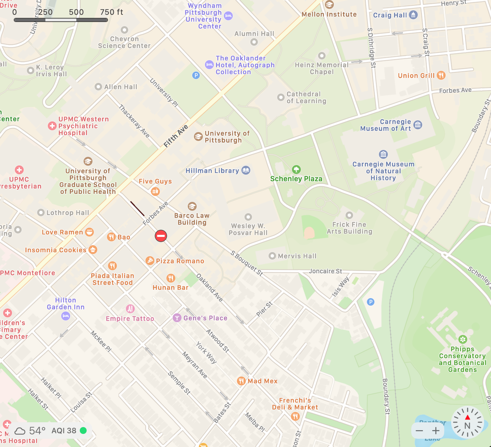

My Recents
This is a list of my recent restuarant visits
hi
Favorites
This is a list of my favorite restuarants
hi
All Restaurants
Chipotle
Mexican
MENU
Address: 3615 Forbes Ave Pittsburgh, PA 15213
Phone: (412) 621-1557
Hours:
Mon: 10:45 AM - 10:00 PM
Tue: 10:45 AM - 10:00 PM
Wed: 10:45 AM - 10:00 PM
Thu: 10:45 AM - 10:00 PM
Fri: 10:45 AM - 10:00 PM
Sat: 10:45 AM - 10:00 PM
Sun: 10:45 AM - 10:00 PM
Roots Natural Kitchen
Address: 3610 Forbes Ave, Pittsburgh, PA 15213
Phone:(412) 904-3190
Hours:
Mon: 10:30 AM - 9:30 PM
Tue: 10:30 AM - 9:30 PM
Wed: 10:30 AM - 9:30 PM
Thu: 10:30 AM - 9:30 PM
Fri: 10:30 AM - 9:30 PM
Sat: 11:00 AM - 9:30 PM
Sun: 11:00 AM - 9:30 PM
Menu: https://www.rootsnaturalkitchen.com/address/898-prices-fork-rd-blacksburg-va-24060/?gclid=CjwKCAjwoP6LBhBlEiwAvCcthOwV2bfZA-b1XtIiVuACz_d10FbvG0Lxz3sud8WSgr53-yF4Gf6kdhoCSX0QAvD_BwE
Primanti Bros. Restaurant and Bar
Address: 3803 Forbes Avenue Pittsburgh, PA 15213
Phone: 4126214444
Hours:
Mon:11am - 10pm
Tue:11am - 10pm
Wed:11am - 10pm
Thu:11am - 11pm
Fri:11am - 12am
Sat:11am - 12am
Sun:11am - 10pm
Menu: https://locations.primantibros.com/pa/pittsburgh/38002/#menu
The Porch at Schenley // Drive: 1 min 351 ft Walk: 2 min 456 ft // Address: 221 Schenley Dr Schenley Plaza Pittsburgh, PA 15213 // Phone: (412) 687-6724
Hours:
Mon: 11:00 AM - 10:00 PM
Tue: 11:00 AM - 10:00 PM
Wed: 11:00 AM - 10:00 PM
Thu: 11:00 AM - 10:00 PM
Fri: 11:00 AM - 11:00 PM
Sat: 10:00 AM - 11:00 PM
Sun: 10:00 AM - 9:00 PM
Revolving Menu: https://www.dineattheporch.com/schenley/menu
Pamela's Diner Drive: 3 min .5 mile Walk: 6 min .3 mile // Address: 3703 Forbes Ave, Pittsburgh, PA 15213 // Phone: (412) 683-4066
Hours:
Mon: 8:00 AM - 2:00 PM
Tue: Closed
Wed: Closed
Thu: 8:00 AM - 2:00 PM
Fri: 8:00 AM - 2:00 PM
Sat: 8:00 AM - 2:00 PM
Sun: 8:00 AM - 2:00 PM
Menu: https://38f5a239-73ea-4e3a-9e0d-aaf50e3061cd.filesusr.com/ugd/fa9060_71868cbbe7974c4ca2c7ff94a55d6273.pdf
Oishii Bento // Drive: 4 min .6 mile Walk: 6 min .3 mile // Address: 119 Oakland Ave, Pittsburgh, PA 15213 // Phone: (412) 687-3335
Hours:
Mon: 10:30 AM - 9:00 PM
Tue: 10:30 AM - 9:00 PM
Wed: 10:30 AM - 9:00 PM
Thu: 10:30 AM - 9:00 PM
Fri: 10:30 AM - 9:00 PM
Sat: 11:00 AM - 9:00 PM
Sun: Closed
Menu: https://oishiibento.com/menu/
Five Guys Drive: 2 min .3 mile Walk: 5 min .2 mile// address: 117 S Bouquet St Pittsburgh, PA 15213 // Phone: (412) 802-7100
Hours:
Mon: 11:00 AM - 10:00 PM
Tue: 11:00 AM - 10:00 PM
Wed: 11:00 AM - 10:00 PM
Thu: 11:00 AM - 10:00 PM
Fri: 11:00 AM - 10:00 PM
Sat: 11:00 AM - 10:00 PM
Sun: 11:00 AM - 10:00 PM
Menu: https://www.fiveguys.com/menu
Noodles and Company // Drive: 3 min .6 mile Walk: 5 min .2 mile // Address: 3805 Forbes Ave, Pittsburgh, PA 15213 // Phone: (412) 621-0890
Hours:
Mon: 11:00 AM - 9:00 PM
Tue: 11:00 AM - 9:00 PM
Wed: 11:00 AM - 9:00 PM
Thu: 11:00 AM - 9:00 PM
Fri: 11:00 AM - 10:00 PM
Sat: 11:00 AM - 10:00 PM
Sun: 11:00 AM - 10:00 PM
Menu: https://www.noodles.com/menu/
CHiKN // Drive: 3 min .5 mile Walk: 6 min .3 mile // Address: 3712 Forbes Ave, Pittsburgh, PA 15213 // Phone: (412) 438-8362
Hours:
Mon: 11:00 AM - 10:00 PM
Tue: 11:00 AM - 10:00 PM
Wed: 11:00 AM - 10:00 PM
Thu: 11:00 AM - 10:00 PM
Fri: 11:00 AM - 10:00 PM
Sat: 11:00 AM - 10:00 PM
Sun: 11:00 AM - 10:00 PM
Menu: https://www.hotchikn.com/
Piada Italian Street Food // Drive: 3 min .5 mile Walk: 7 min .3 mile// address: 3600 Forbes Ave Pittsburgh, PA 15213// Phone: (412) 224-2432
Hours:
Mon: 10:45 AM - 10:00 PM
Tue: 10:45 AM - 10:00 PM
Wed: 10:45 AM - 10:00 PM
Thu: 10:45 AM - 10:00 PM
Fri: 10:45 AM - 10:00 PM
Sat: 10:45 AM - 10:00 PM
Sun: 10:45 AM - 10:00 PM
Menu: https://mypiada.com/menu
McDonalds // Drive: 3 min .5 mile Walk: 6 min .3 mile // Address: 3708 Forbes Ave Pittsburgh, PA 15213 // Phone: (412) 687-3747
Hours:
Mon: 5:00 AM - 4:00 AM (Next day)
Tue: Open 24 hours
Wed: 4:00 AM - 1:00 AM (Next day)
Thu: 5:00 AM - 4:00 AM (Next day)
Fri: Open 24 hours
Sat: Open 24 hours
Sun: 4:00 AM - 1:00 AM (Next day)
Menu: https://www.mcdonalds.com/us/en-us/full-menu.html
Subway // Drive: 3 min .5 mile Walk: 6 min .3 mile // Address: 3707 Forbes Ave Pittsburgh, PA 15213 // Phone: (412) 687-7550
Hours:
Mon: 7:00 AM - 12:00 AM (Next day)
Tue: 7:00 AM - 12:00 AM (Next day)
Wed: 7:00 AM - 12:00 AM (Next day)
Thu: 7:00 AM - 12:00 AM (Next day)
Fri: 7:00 AM - 12:00 AM (Next day)
Sat: 9:00 AM - 12:00 AM (Next day)
Sun: 9:00 AM - 12:00 AM (Next day)
Menu: subway.com/en-US/MenuNutrition/Menu
Stack'd Oakland // Drive: 3 min .5 mile Walk: 6 min .3 mile// 3716 Forbes Ave Pittsburgh, PA 15213// Phone: (412) 681-1800
Hours:
Mon: 11:00 AM - 12:00 AM (Next day)
Tue: 11:00 AM - 12:00 AM (Next day)
Wed: 11:00 AM - 12:00 AM (Next day)
Thu: 11:00 AM - 12:00 AM (Next day)
Fri: 11:00 AM - 1:00 AM (Next day)
Sat: 11:00 AM - 1:00 AM (Next day)
Sun: 11:00 AM - 12:00 AM (Next day)
Menu: https://www.stackdburgers.com/oaklandmenu
Fuel and Fuddle // Drive: 3 min .4 mile Walk: 6 min .3 mile // Address: 212 Oakland Ave Pittsburgh, PA 15213 // Phone: (412) 682-3473
Hours:
Mon: 11:00 AM - 12:00 AM (Next day)
Tue: 11:00 AM - 12:00 AM (Next day)
Wed: 11:00 AM - 12:00 AM (Next day)
Thu: 11:00 AM - 12:00 AM (Next day)
Fri: 11:00 AM - 12:00 AM (Next day)
Sat: 11:00 AM - 12:00 AM (Next day)
Sun: 11:00 AM - 12:00 AM (Next day)
Menu: http://fuelandfuddle.com/newsite/wp-content/uploads/2020/08/20800-FF_Menu-FoodOnly.pdf
Hello Bistro // Drive: 3 min .5 mile Walk: 7 min .3 mile// address: 3605 Forbes Ave Pittsburgh, PA 15213// Phone: (412) 687-8787
Hours:
Mon: 10:30 AM - 8:00 PM
Tue: 10:30 AM - 8:00 PM
Wed: 10:30 AM - 8:00 PM
Thu: 10:30 AM - 8:00 PM
Fri: 10:30 AM - 8:00 PM
Sat: 10:30 AM - 8:00 PM
Sun: 10:30 AM - 8:00 PM
Menu: https://www.hellobistro.com/menu